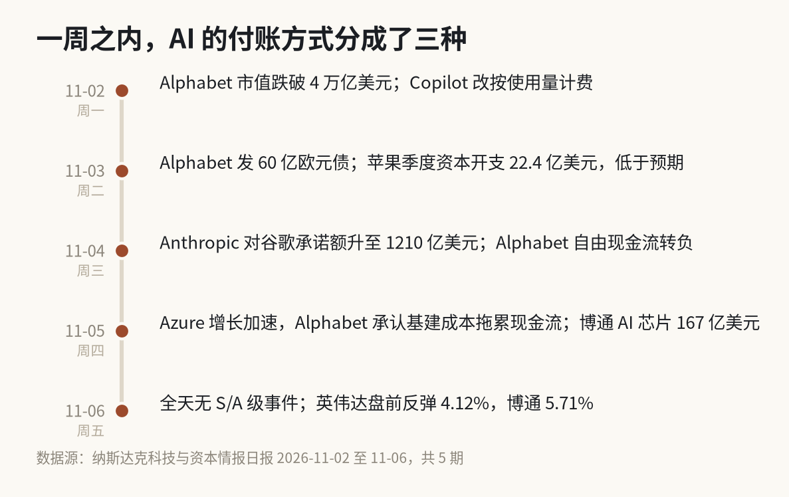
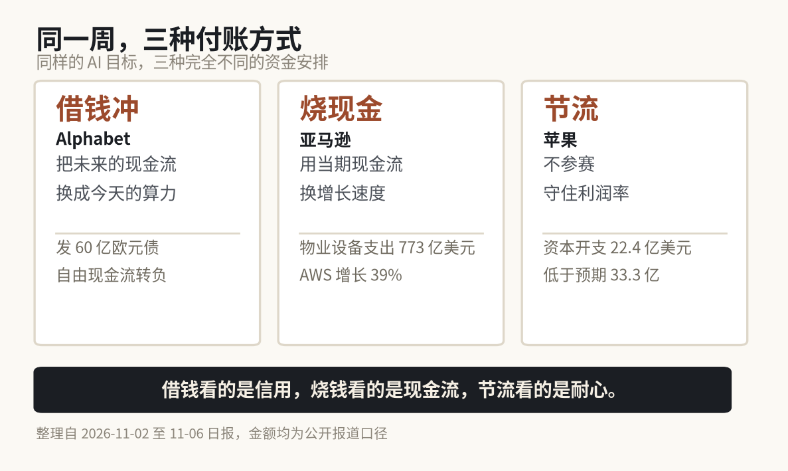
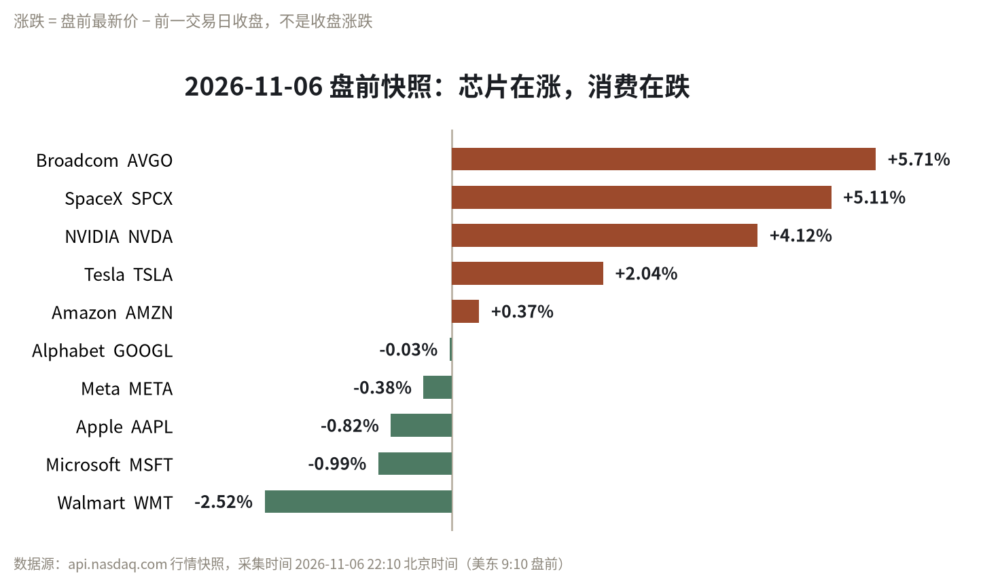

NASDAQ INTELLIGENCE · 11.02 — 11.06
5 期日报｜60 个归并事件｜54 条待核验
11 月第一周，四家巨头做了四个不一样的决定。
苹果把员工 AI 工具预算砍了，季度资本开支 22.4 亿美元，比市场预期的 33.3 亿少了近三分之一。
Alphabet 发了 60 亿欧元债。
亚马逊单季物业及设备支出 773 亿美元，同比翻倍以上，AWS 增长 39%，是近五年最好的数字。
微软什么都没改，只是把 Azure 的增速又提了一档。
同一件事，
四种做法。
先把判断放在前面：这一周，AI 的争论没有从“需求有多大”转向“是不是泡沫”，而是转向了一个更实际的问题——这笔钱怎么付。
因为需求端这周给出的证据，其实是变硬了。变贵的不是算力，是买算力的钱。

11 月 2 日至 6 日，每天一个关键动作｜整理自纳斯达克情报日报
1
借钱、烧钱、省钱
三种付账方式，对应三种对未来的押注。
借钱的，相信未来的现金流能覆盖今天的债务。烧钱的，相信增长窗口比现金更贵。省钱的，相信不参赛也是一种赢法。

三种付账方式与本周对应数字｜整理自 11-02 至 11-06 日报
Alphabet 那 60 亿欧元，折合约 67 亿美元。对一家市值 4 万亿美元的公司来说，这笔钱连零头都不算。
所以重要的不是金额，是动作。报道写得很直白：这次发债发生在“市场对 AI 投资成本及其潜在回报日益担忧”的背景下。
亚马逊那边是另一种节奏。第三季度净销售额增长 12%，净利润同比下降，因为去年同期有一笔大额投资收益，属于基数效应；股价当天跌了约 6%。但真正的数字在现金流量表上：物业及设备支出单季 773 亿美元，同比翻倍以上。
周五，CEO Jassy 又给了一个更大的数字：AWS 在 2027 和 2028 年能增长 40%，最终做成万亿美元业务。
苹果最安静。这一周它出现在日报里两次，两次都是省钱——一次是资本开支低于预期，一次是削减员工 AI 工具预算。
借钱的看信用，烧钱的看现金流，省钱的看耐心。三种选择都能成立，前提是你付得起自己选的那一种。
2
一张转负的自由现金流
这一周关于 Alphabet 的信息密度最高，而且四天里的话可以串成一条链。
周一，市值跌破 4 万亿美元，从高点回撤约 5050 亿美元。
周二，发行 60 亿欧元债。
周三，自由现金流转负。
周四，财报电话会：AI 驱动的云需求激增，TPU 销售扩大，但基础设施成本上升，拖累现金流与利润率。
连起来读就是一条完整的因果链：需求来了，就要买算力；买算力要钱；钱不够；去借。
但这条链子里最值得注意的不是“借钱”这个动作，而是那句“TPU 销售扩大”。
谷歌不只是买算力，
它也在卖算力。
自研芯片从自用走向对外商业化，这是“什么时候回来”这个问题上，最实在的一条线索。卖芯片比卖云服务离钱更近。
不过要说清楚边界：这条 A 级事件在日报里标了“待核验”，只有单一来源（Zacks 经 Nasdaq 转载），没有财报原文。收入、利润率、资本开支、TPU 销售金额，一个具体数字都没披露。
能确认的是方向，不能确认的是幅度。
3
苹果把压力换了个位置
苹果这周在日报里只出现两次，都是“省钱”。但同期它的业绩是超预期的，iPhone 营收还在增长。
代价写在指引里：毛利率指引下降，原因是内存成本上涨。
所以苹果不是没有压力，是把压力的位置换了。别人把压力放在现金流和资产负债表上，苹果把压力放在毛利率上。
这两种压力，市场给的定价不一样。因为现金流可以靠融资撑，毛利率只能靠定价权撑。前者是财务问题，后者是竞争问题。
同一周还有一个小变化，我觉得比资本开支更有意思：微软把 Copilot 从按席位定价，改成了按使用量定价。
按席位收钱，卖的是“你有没有”。按使用量收钱，卖的是“你用了多少”。前者是订阅，后者是消耗。
这个转向对客户是更低的门槛，对微软是更不确定的收入。它的潜台词是：AI 工具的“人人有份”阶段过去了，接下来要证明真的有人天天在用。
4
需求端，三个反方向的数字
如果只盯着资本开支和发债，很容易得出“泡沫”的结论。但这一周需求端给出的三个数字，方向是反的。
第一个，Anthropic 把对谷歌的承诺额提高到 1210 亿美元。同时它账上还有约 1320 亿美元的现金及短期投资（截至 9 月 30 日）。
第二个，博通 AI 半导体营收 167 亿美元，超出目标。
第三个，AWS 连续六个季度加速，CEO 给出的指引是接下来两年各增长 40%。
再加一条容易漏掉的：亚马逊自研 AI 芯片已经做到百亿美元的收入运行率。
这四条放在一起说明一件事——算力的买家还在加单，而且加的是长约。真正的问题不是有没有人买。
问题在于：买家付的钱，能不能赶在卖家还债之前，覆盖掉那张账单。
5
一个“没有大事”的周五
11 月 6 日的日报，第一节只有一句话：今日未发现达到 S/A 级的事件。
这是这一周唯一一天。但那天并不是没有信息——采集到 59 条新闻、60 个归并事件，其中 54 条待核验。
盘前是这样的：

盘前快照，不是收盘价｜数据源 api.nasdaq.com，美东 9:10 采集
芯片三个涨得最凶：博通 +5.71%，SpaceX +5.11%，英伟达 +4.12%。消费最弱：沃尔玛 -2.52%。
英伟达这个 +4.12% 值得单独说。因为它的前一个交易日，也就是 11 月 5 日，收盘跌了 9.26%——从 200.13 美元跌到 181.60 美元。
一天跌 9.26%，第二天盘前涨 4.12%。这不是基本面在一天之内拐了弯，是情绪在一天之内换了方向。
同一天还有两条容易滑过去的消息。
Meta 设置了 C 类无投票权股份，形成 2 比 1 的拆股效果。不直接拆股，用股份结构做——控制权不稀释，流动性却增加了。这是一次很干净的资本结构操作。
特斯拉 FSD 付费用户超过 170 万，Robotaxi 在扩张。这两件事放在一起，是自动驾驶第一次有了“收入侧”的数字。
6
接下来盯这五件事
日报的观察清单里，最硬的一个日期是 11 月 17 日——英伟达的季度财报。它的一份财报，基本等于给整个 AI 芯片板块重新定一次价。
其余四条：
1. Alphabet 那 60 亿欧元债的最终票息与募集用途。
2. Alphabet 的自由现金流能否在下一季度转正——这是本周最该追的一条线。
3. Anthropic 1210 亿美元承诺额的构成，以及它在会计上怎么确认。
4. 亚马逊 773 亿美元物业设备支出的明细，以及全年自由现金流口径。
5. 苹果在内存成本上涨下，毛利率指引会不会再降一次。
发布会讲想象力，
财报讲还款能力。
这一周读下来，最强烈的感觉是：AI 的叙事没变，变的是记账方式。
两年前的 AI 故事讲的是“我们投了多少”。现在的 AI 故事要讲“这笔钱从哪来、几年回本”。
前一个问题可以靠发布会回答。后一个问题，只能靠财报回答。
这也是为什么这一周看起来什么都没发生，回头再看，可能是这一季度信息量最大的一周之一。
本文基于纳斯达克科技与资本情报日报 2026-11-02 至 11-06 共 5 期整理，数据截止 11-06 22:10 北京时间；盘前价格为盘中快照，不等于收盘价；部分事件为单一来源，已在文中标注。内容不构成任何投资建议，投资有风险，入市需谨慎。